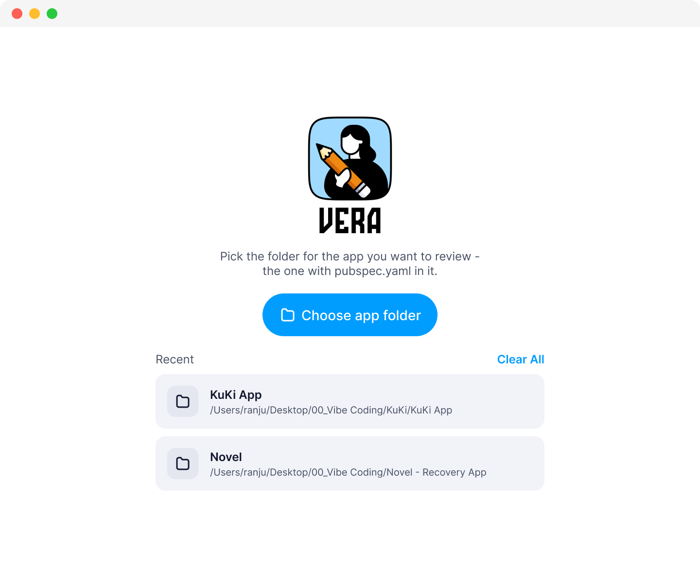

Fix the design.
Not the prompt.
A live visual overlay for Flutter. Tap any widget directly on your running app, tune padding, color, and radius by hand, and export clean AST Dart patches back to your codebase. No endless prompting. No waiting on rebuilds.


20px → spacing.lg (24) with 1-tap correction


design_qa_out/
Why prompting pixels breaks your flow.
AI is incredible at writing full features, but terrible at placing a margin by 4 pixels. Here is the loop you’re stuck in today — and how Vera deletes it.
Describing Pixels in English
-
1
AI generates the screen
Cursor or Claude writes the entire Dart file in one pass.
-
2
Visual drift slips through
Button padding is 18px instead of 24px. Radius is off by 2. Colors almost match.
-
3
Write a clarifying prompt
"Make the card padding a bit larger and align the avatar to the left."
-
4
Wait for rebuild & hope
The AI changes unrelated code, re-renders, and the padding is now 16px. Repeat.
Direct Visual Correction
-
1
Tap the widget on screen
Select any component on your running Flutter app or simulator.
-
2
Live property inspector opens
Bound directly to its real
RenderObject. No rebuild required. -
3
Scrub sliders or tap token fix
Drag padding to 24, pick
colors.primaryfrom your design tokens. -
4
Export clean AST code patch
Vera writes an exact Dart patch and changelog to your project directory.
Everything you need to ship pixel-perfect UI.
Vera edits the actual running widgets on real devices. No mockups, no approximations.
Tap It, Then Fix It
Select any widget to scrub padding, margins, colors, corner radius, alignments, and typography. Every adjustment renders in real-time under your finger.
- Real
RenderObjectbinding - Zero hot-reload delay
- Live numeric scrubbing & keyboard steps

Figma Overlay & Difference Mode
Pin your Figma frame directly over the running app. Use opacity sliders for quick checks or Difference Blend mode to make any pixel disagreement glow brightly.
- Normal & Difference blend modes
- Pixel-perfect alignment & scaling
- Instant visual agreement verification
Off-Token Values Flag Themselves
Vera reads your design tokens from design_qa.yaml and highlights rogue values in amber. If AI generated padding: 22, Vera offers a 1-tap fix to spacing.lg (24).
- Spacing, radius, and color linting
- One-tap token normalization
- Enforces your team's design system
Jump Straight to Deep Screens
Don’t tap through a 4-step onboarding flow every time you need to QA a checkout confirmation. Vera scans your routes on setup and lets you jump directly with mock parameters.
- Auto-discovered named routes & GoRouter
- Fuzzy search across all screens
- Pass mock arguments automatically
Zero terminal required for designers.
If you’re a designer or product manager who doesn't want to run shell commands, the companion macOS desktop app manages everything:
Point to any Flutter project folder.
Vera inspects main() and sets up tokens safely.
Picks a simulator/device, runs the app, and exports patches.

Byte-for-byte identical in production builds.
DesignQA.wrap executes inside a kDebugMode guard. In release and profile builds, Flutter and Dart's AOT tree-shaker removes the entire overlay codebase completely.
We measured the compiled binary directly:
| Build Target (App.framework) | Binary Size |
|---|---|
flutter build macos --release (Standard) |
6,906,368 bytes |
flutter build macos --release (With Vera) |
6,906,368 bytes |
| Production Binary Difference | 0 Bytes (Exact Match) |
Start fixing UI in under 30 seconds.
Add Vera to any Flutter project. No app-code changes beyond one automated wrapper call.
# 1. Add Vera as a dev dependency
flutter pub add --dev design_qa
# 2. Automatically wrap root widget & scan tokens (asks first)
dart run design_qa:init
# 3. Run with widget creation tracking enabled
flutter run --track-widget-creation--track-widget-creation?
This standard Flutter debug flag allows Vera to map any tapped widget on your screen directly back to the exact source file and line number for AST patch exports.